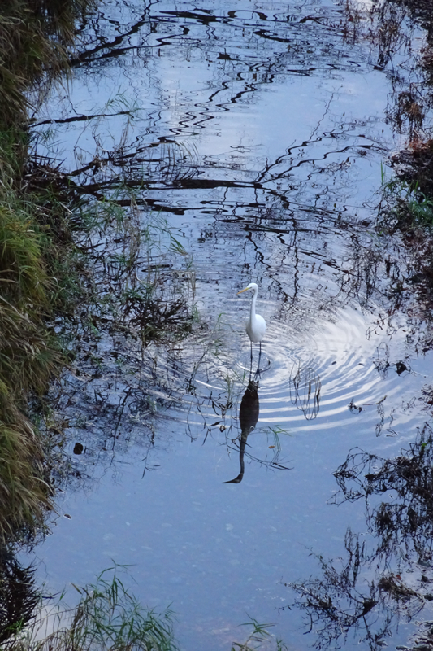

ヴァイグル: 弦楽四重奏曲第8番
引き続きThomas Christian EnsembleのCDで、前回のKienzlとは対照的なKarl Weiglの最後の弦楽四重奏曲。Weiglも今回はじめて名前を知ったウィーンの作曲家で、Kienzlよりも10年ほど後に生まれている。
Karl
Weigl: String Quartet No.8 in D Major
Thomas Christian Ensemble (2017)
有名ではないと言ってもこちらは結構情報もあるし、一定の支持層があって再評価されつつある作曲家のようだ。そしてKienzlと決定的に異なるのは、ユダヤ系であったため50代後半になってウィーンにはいられなくなり、多くのユダヤ系音楽家同様アメリカに亡命せざるを得なかったこと。これはその地で迎えた死の年1949年の作品である。
年齢からして枯れた作品かというとそうでもなく、例えばヴォーン＝ウィリアムズの2番の四重奏曲などと比べるとかなり生命力を感じる。曲想は抽象的で、厳しさと柔らかさを兼ね備えた人格を見るようだといえばよいだろうか。調性は付いていて聞きやすい旋律がちゃんとあるのだが、予想される和声に落ち着くことをふんわりと拒み、微妙にぼかされた不安定な調性感の霧の中を歩んでゆくような手法で、終始浮遊感を味わうことができる。そして結尾はちゃんと主和音に解決される。どの楽章も美しいが、中でも懐かしさのこもったような第2楽章が良い。
ヴァイグルは死の間際に、ウィーンの宮廷歌劇場でマーラーの下で働いていた頃のことが忘れられないと述懐したそうである。泣ける話ではないか。

(Oct. 12, 2022)